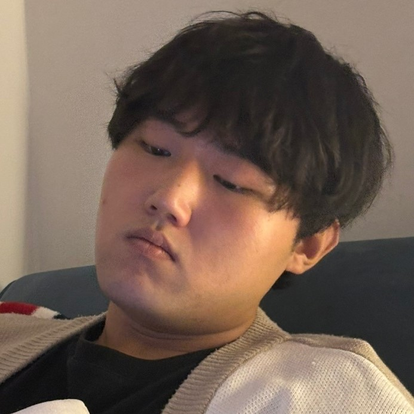

My Projects
A selection of my range of projects
Programmer/Developer/
I began my programming journey with C++, and it was the very first language I ever learned. Out of all the languages I have encountered, C++ has proven to be the one that suits me best. Because of this strong connection, I continue to deepen my understanding and skills in C++ every day.
When I'm developing games, I often create my own drawings and incorporate them into my projects. Although I'm not fully confident in my painting skills right now, I always strive to express my creative vision. Recently, I made a painting that mysterious the dreamy, enchanting atmosphere of a witch's forest as a background element.
When producing a game, I believe the story is essential for both the narrative and overall immersion. I always prioritize crafting a compelling script to bring the game's world to life. Whenever I have new ideas for the storyline, I immediately start working on producing the script to enhance the gaming experience.
Student Game Programmer Jiyun Seok
I'm currently a student in the Digipen-KMU Special Program in Daegu, Korea, where I focus exclusively on game programming using C++. My academic journey has been deeply rooted in hands-on learning, and I'm continually exploring the endless possibilities of C++ in game development.
In addition to coding, I have a strong passion for the creative side of game design. I enjoy drawing my own artwork and crafting immersive game storylines that add depth and character to my projects. I eagerly collaborate with friends exchange ideas, and strive to transform imaginative concepts into engaging gaming experiences.
A selection of my range of projects
Title, Company Month Year - Present City, State, Country What you did, how you did it, result. Quantify your achievement(s) try to have at least one like this. Look at the example below.
Software Test Engineer Intern, Qualtrics Month Year - Month Year Seattle, WA Implemented an extensible script in Python to automate project creation with static data on tests to improve pass rates and duration, ultimately speeding up software releases. Improved test times across 3 teams by nearly 400% with more stability. Reviewed design docs and prototypes of an upcoming feature release to create nearly 50 test cases. Performed manual testing and triaged 15 bugs with engineers.
Role, Name of Project Month Year - Month Year Redmond, WA Type of game, (2D Platformer, FPS) and describe its genre (Horror, Adventure, etc.). Collaborated with a team of x and developed a ... Designed most of the front end & debugged PHP. Awarded the Most Creative Award by Appian and Best Innovation in Collaboration Award by Red Ventures.
Role, DigiPen Institute of Technology Month Year - Month Year Redmond, WA A lot of you do many things on campus. For example, did you manage/host a game jam? Brainstorm initiatives you have worked on.
Bachelor of Science in Computer Science in Real-Time Interactive Simulation Year-Year Daegu, Korea & Redmond, WA, USA Relevant Courses: Name the courses that would draw attention, significant, relevant to the job.